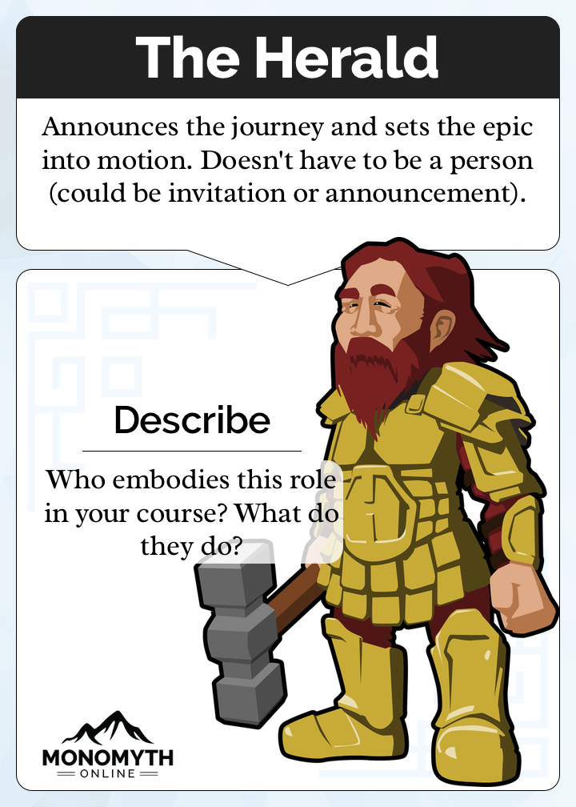
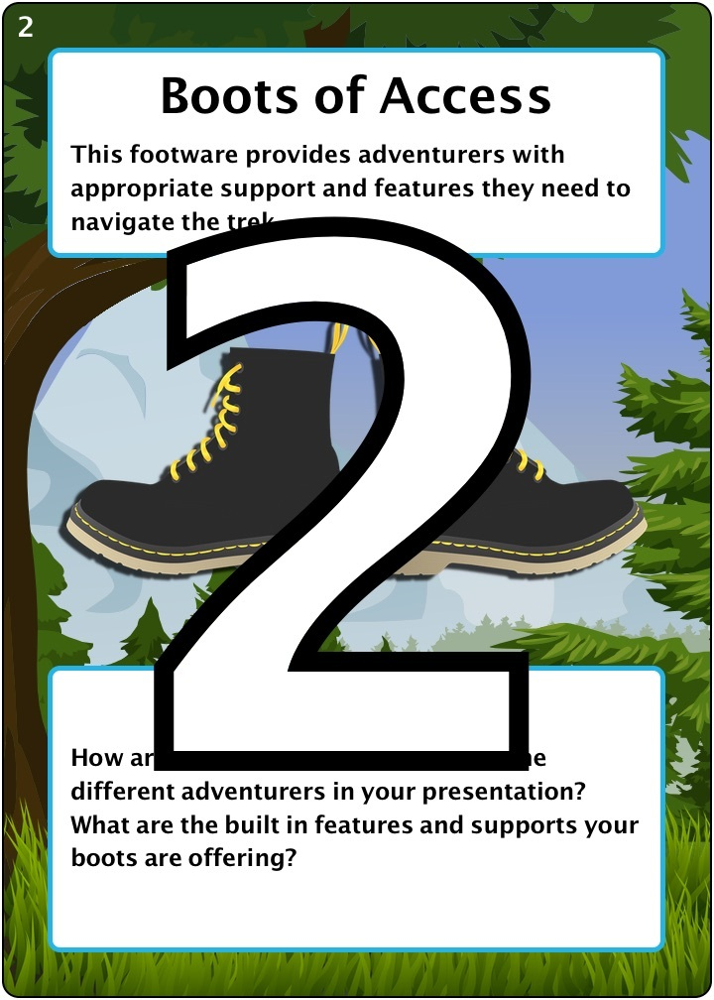

Epic Heroes
Made popular over the centuries by the Heraldhogs, Epic Heroes became the favorite pastime of the social and peaceful beings. While no one is quite sure why, some suspect it might be due to a perceived likeness to “The Herald” card (pictured below).
You can find the card deck housed via a randomizer on the Gwaugle Blackhole Service at https://epicheroes.keeganslw.com.
The Game is Afoot
Reportedly the secret game of Fred (simply Fred). According to recorded accounts, Fred (simply Fred)...who mind you, started as a self-reported ‘well-intended’ educator...secretly utilized this game to obscure his species name so that he and his fellow species beings could not be associated with the inter-species calamity. We are told that if you ever come across his hidden card sorter, if you place the cards in the order of the number of galactic burgers he eats on a yearly basis the secret of his species name will be revealed. Apparently, each of the cards in this famous deck have a unique number, so the trick would be arranging them in the order that matches however many galactic burgers Fred (simply Fred) eats a year. There are not many copies of the game itself, as they have become coveted card decks, but one of our contributors sent us a picture of Fred (simply) Fred’s favorite card from the deck (pictured below).
[If you find yourself with hours to spare, we recommend you read Chapter 474, “‘Intergalactic, planetary, planetary, intergalactic, Another dimension, another dimension’ and the Rest of the Famous Inter-Species Calamities” for a complete review of the events]
You can find the card deck housed via a randomizer on the Gwaugle Blackhole Service at https://ac19.keeganslw.com/.
The Agile Teacher
They say the Goblin species are an agile bunch due to their excellent problem solving skills and their studious nature. It is no doubt that they held onto this relic from 2018, then, which was once used by humans as a playful professional development tool.
You can find the card deck housed via a randomizer on the Gwaugle Blackhole Service at https://www.thegamecrafter.com/games/the-agile-teacher.